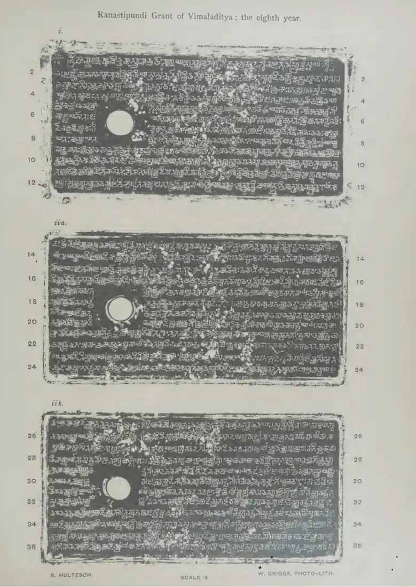
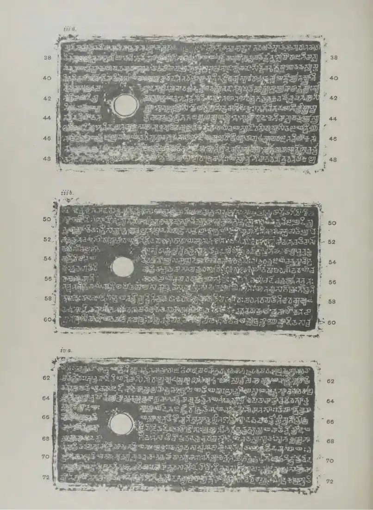
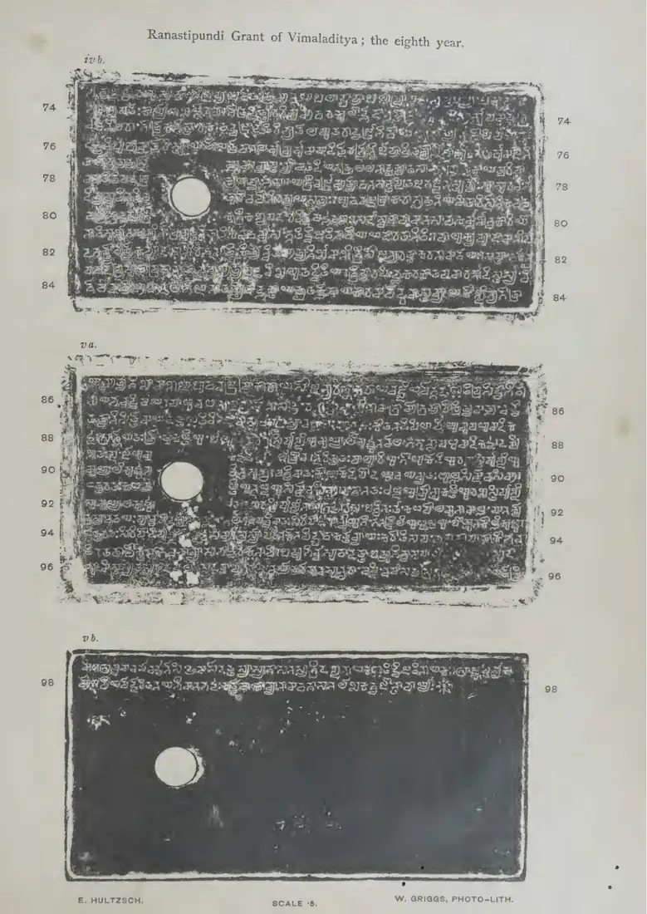

Ranastipundi Grant of Vimaladitya; Dated in the Eighth Year
RANASTIPUNDI GRANT OF VIMALADITYA;
DATED IN THE EIGHTH YEAR.
DATED IN THE EIGHTH YEAR.
By V. VENKAYYA, M.A.
The copper-plates on which the subjoined inscription is engraved were discovered about 70 years ago while quarrying earth for bricks in the fields of the ancestors of a ryot in the Amalápuram táluka of the Gôdávarí district, and are now in the possession of Valavala Jagganna who lives at Amalápuram. They were received from the Collector of Gôdávarí through the Government of Madras in 1899 and will have to be returned to the owner: Dr. Hultzsch has kindly permitted me to publish them.
The plates are five in number and were strung on a ring, which had not yet been cut when they were received. The ring measures about 6½” in diameter and about ¾” in thickness. Its ends are secured in a four-petalled flower, which forms the base of a circular seal of about 3¼” diameter. The seal bears, in relief on a countersunk surface, the legend Śrī-Tribhuvanámkusa. Below the legend is an eight-petalled flower, and above it a running boar facing the proper left. In front of the boar is an elephant-goad; behind it the crescent of the moon; and above it the sun flanked by two chaurís. The breadth of the plates is 10½”, and their height 51¼”. Their edges are raised into rims for protecting the writing, with the exception of the first side of the first plate, which is blank, and of the second side of the fifth plate, which bears only two lines of writing. The writing is on the whole in a state of good preservation, but a number of places are damaged by verdigris.
1 With kaṭakádhipa compare kaṭakádhirája, etc.; above, Vol. IV. p. 309, note 1, and Vol. V. p. 131, last line.
The alphabet is ancient Telugu, while the language is mostly Sanskrit verse and prose. The description of the boundaries of the village granted (ll. 87-94) is in a mixture of Sanskrit and Telugu prose. I would draw attention to the following points in the alphabet of the inscription. The long á after consonants is marked in different ways; compare dhá, ná, rá and há in line 1 with the smá of the first tasmád= in line 3, and with the smá of the second tasmád= in the same line. The long á added to conjunct consonants of which the répha is a member is generally omitted, except in rttá of vañsá-karttá (l. 4) and rshá of varshání (l. 29). The syllable já occurs eight times in the inscription; but it is written correctly only once (in mahárájádhirája, l. 61), while in the remaining seven cases the long á is not marked at all. Initial i occurs in ll. 55, 66 (twice), 70, 85, 87 and 97. In a large number of cases the répha is added to the i-symbol above consonants, the addition being denoted by a slight indenture at the base of the latter, e.g. in rtti (ll. 4, 16, 60) and rvvi (ll. 19, 33, 34, 41). Initial i occurs in l. 91. The secondary form of the long i is rarely distinguished from that of the short i; but in śrí (ll. 1, 2), sí (l. 3) and chí (l. 5) an attempt is made to mark the length. Initial u occurs in l. 94. In combination with consonants this vowel is denoted in three different ways; compare ru (ll. 1, 2, 3, 4), šu (l. 2) and pu (l. 3) with nmu (l. 2) and tsu (l. 3), and with yu (ll. 3, 4, 8). The secondary form of the long ú is also denoted in three different ways; compare bhú (l. 1) with sú (ll. 2, 3) and chú (l. 2), and with tsú (ll. 8, 30, 33), trú (l. 41) and ssú (l. 70). Initial é occurs in ll. 36, 75, 91. Combined with consonants, this vowel is denoted in two ways; compare té (l. 3), mé (l. 4) and ké (l. 7) with jñé and né (l. 2). Initial ai is found in l. 6, and initial rí in l. 7. Final k occurs in l. 68; final m in ll. 3, 37, 41, 46; final n in ll. 31, 35, 36, 41 (twice), 53, 62; and final t in ll. 17, 20, 29, 38, 52, 64, 67. In the majority of cases no distinction is made between the dental d and the lingual đ; compare chúdámañi (l. 81) with váran-ádis= (l. 83) and mad=alábhi (l. 84); but in pratiđakká (l. 22), Kađañba (l. 23), Káramachéđu (l. 84) and Peggađa (l. 85) the loop of the đ is quite distinct. The aspirate chha occurs twice in the inscription (ll. 14, 59), and in both cases in conjunction with cha. In all other cases its place is taken by the unaspirated cha. Double shsha is written as if it consisted of sha and va; see ll. 32, 35 and 43. The upadhmáníya occurs in ll. 1, 4, 5 (twice), 11 (twice), 14, 15, 38, 46, 70, 73.
Of orthographical peculiarities the following deserve to be noted:— The syllable ri is used for the vowel ri in Richuka for Ríbhuka (twice in l. 7), krítvá for křítvá (l. 9), °vritámtas= for °vrittámtas= (l. 21) and °kritya for °kritya (l. 86). The syllable yí is used for initial i in yiti (l. 9) and yiva (ll. 45, 47, 55, 56 (twice), 57, 68). G is doubled after an anusvára in Gañgg-ádi (l. 23) and °sañggatir= (l. 81) and before r in °ggráhinas= (l. 12), and t before r in Ttrílóchana (l. 17). After r consonants are generally doubled, except in -Bhím-Árjuna- (l. 12) and nirjitya (l. 23). Sáñbrájya occurs for sámrájya in l. 23.
The inscription opens with the Pauránik genealogy of the Eastern Chálukya kings (ll. 1-15) and with a legendary account of their ancestors (ll. 15-25). Ll. 25-42 furnish the historical genealogy of the donor Vimaláditya. The date of his coronation is given in verse 13. He is praised in general terms in vv. 14-20 and in the subsequent prose passage (ll. 54-61). L. 61 f. contains the king's titles Sarvalókášraya, Vishnuvardhana, etc. Vv. 21-34 describe the donee and his ancestors. Then follows the grant itself, the description of the boundaries of the village granted, and of a field which belonged to it. The inscription closes with the date of the grant, and the names of the executor, the composer and the writer.
The Pauránik, legendary and historical portion of the genealogy agree almost literally with the corresponding passage of the Nandamapúndi grant of Rájarája I.1 as far as the description of the reign of Vimaláditya's predecessor Šaktivarman (v. 11). The Korumelli plates of Rájarája I.,2 the Téki plates of Chóđaganga,3 the Chellúr plates of Víra-Chóđa,4 and the Piṭhápuram plates
1 Above, Vol. IV. No. 43.
3 No. 95 above.
2 Ind. Ant. Vol. XIV. p. 48 ff.
4 South-Ind. Inscr. Vol. I. No. 39.
of the same king1 also agree with the Raṇastipúndi grant to a great extent, while the Piṭhâpuram pillar inscription of Mallapadèva2 furnishes substantially the same facts regarding the early Eastern Châlukyas and their ancestors. The historical portion commencing with the reign of Kubja-Vishpuvardhana is known from grants earlier than the time of Vimalâditya. But the Raṇastipúndi grant is the earliest inscription hitherto discovered, which contains the Paurânik and legendary portions (ll. 1-25).
This is the first inscription which has been found of king Vimalâditya, the son of Dâna or Dânârṇava by his wife Âryâmahâdêvi3 (v. 12) and younger brother of that king Śaktivarman who ruled immediately after the interregnum in the Vêngî country. An important item of information furnished by our grant is the date of Vimalâditya's accession, which until now had to be obtained by deducting the duration of his reign as given in the copper-plate grants from the date of the accession of his son and successor Râjarâja I. as found in the Korumelli plates4 and in the Nandamapúndi grant.5 According to verse 13 of the subjoined inscription, Vimalâditya's coronation took place in the Simha lagna and the Pushya nakshatra, on Thursday, the sixth tithi of the bright fortnight of the month Vrìshabha in Śaka-Samvat 933. Professor Kielhorn kindly contributes the following remarks on this date:— "In line 43 read pañchamyâm, 'on the fifth tithi,' instead of yash=shashthyâm. With this alteration the date corresponds, for Śaka-Samvat 933 expired, to Thursday, the 10th May A.D. 1011. The fifth tithi of the bright half (of the lunar month Jyaishtha) in the solar month Vrìshabha ended at 20 h. 44 m. after mean sunrise, and the nakshatra was Pushya, by the equal space system and according to Garga, for 21 h. 40 m. after mean sunrise. For a place situated at 16° Northern Latitude, the Simha lagna on that day lasted from 5 h. 14 m. to 7 h. 24 m. after true sunrise."
The above date removes a discrepancy in the duration of the interregnum between Dânârṇava and Śaktivarman. All the grants assign 27 years to this interregnum. The interval between the accession of Amma II. (Śaka-Samvat 867) and that of Râjarâja I. (Śaka-Samvat 944) is 77 years, while the total duration of the intervening reigns is only 25+3+12+7=47 years. It had therefore to be inferred that the interregnum lasted 77—47=30 years. This discrepancy has already been pointed out by Dr. Hultzsch.6 As we know now that Vimalâditya's reign commenced in Śaka-Samvat 933, the interregnum is reduced to roughly 27 years, the period actually mentioned in the copper-plate inscriptions.
If we subtract from A.D. 1011 the period of the reign of Vimalâditya's predecessor Śaktivarman (12 years), we get the approximate date of the accession of Śaktivarman himself, viz. A.D. 999. The interregnum which preceded Śaktivarman's reign and which lasted 27 years has thus to be placed roughly between A.D. 972 and 999. Hitherto it has been supposed that the interregnum in the Vêngî country was caused by a Chôla invasion.7 The earliest Chôla king who claims to have conquered Vêngî is Râjarâja I., who ascended the throne in A.D. 985. The conquest of Vêngî is first mentioned in inscriptions dated in the 14th year of his reign=A.D. 988-99.8 Consequently, the interregnum could not have been caused by the invasion of the Chôlas, but was probably put an end to by that event. If this conclusion is correct, the Chôla king Râjarâja I. must have restored order in Vêngî by placing Śaktivarman on the throne, and the interregnum must have been due to causes other than the Chôla invasion during the time of Râjarâja I. There is also reason to believe that no Chôla invasion could have taken place before the time of Râjarâja I.
1 Above, Vol. V. No. 10.
2 Above, Vol. IV. No. 33.
3 This queen is mentioned as Â[r]yadêvi in the Piṭhâpuram inscription of Mallapadèva; above, Vol. IV. No. 33, verse 19.
4 Ind. Ant. Vol. XIV. p. 50 and p. 53, text lines 65-67.
5 Above, Vol. IV. p. 302.
6 South-Ind. Inscr. Vol. I. p. 32, note 10.
7 See Ind. Ant. Vol. XX. p. 272.
8 South-Ind. Inscr. Vol. III. p. 5.
The later Eastern Châlukya inscriptions, beginning with the Nandamapûndi grant, report that Vimalâditya reigned 7 years, while the subjoined inscription is dated in his 8th year (l. 97). His accession took place in A.D. 1011, and that of his successor Râjarâja I. in A.D. 1022. Thus the duration of Vimalâditya's reign was 11 years, i.e. 4 years in excess of the period assigned to him. The explanation of this difference has perhaps to be sought for in the following facts. Two inscriptions on the Mahèndragiri hill in the Gañjâm district (Nos. 396 and 397 of 1896) record that (the Chôla king) Râjèndra-Chôla defeated Vimalâditya and set up a pillar of victory on the hill. The date when this event took place is not known. But as this fact is not recorded in the usual historical introduction of Râjèndra-Chôla's Tamil inscriptions, it may be presumed that it happened during the early part of his military career, when his father Râjarâja I. was still living. Again, there is an inscription in the Pañchanadêsvara temple at Tiruvaiyâru near Tanjore (No. 215 of 1894), dated in the 29th year of the reign of the Chôla king Râjarâja I., which records certain gifts to the temple by Vishnuvardhana-Vimalâditya, who is no doubt identical with the Eastern Châlukya king of the same name. There is thus reason to believe that Vimalâditya was at or near Tanjore in A.D. 1013-14. This fact, coupled with the defeat recorded in the Mahèndragiri inscriptions, appears to show that Vimalâditya was taken prisoner to Tanjore by Râjèndra-Chôla. While in the Chôla country, he must have married Kundavâ, the daughter of the Chôla king Râjarâja I. and younger sister of Râjèndra-Chôla I.1 After this marriage Vimalâditya may have been sent back to his dominions about A.D. 1015. Taking these inferences for granted, it may be assumed that, though the period counting from his accession in A.D. 1011 to the date of his death in A.D. 1022 is 11 years, the later Eastern Châlukya records recognise neither his original accession in A.D. 1011 nor the period of his stay in the Chôla country, but reckon his reign from the time when he began to rule after his return from the Chôla country, and thus give only 7 years as the duration of his reign.
The inscription attributes several surnames to Vimalâditya, viz. Birudañka-Bhîma (ll. 44 and 73 f.), Tribhuvanânkuša (l. 47), Mummađi-Bhîma (l. 51) and Bhûpa-Mahèndra (l. 74). Birudañka-Bhîma occurs also in the Nandamapûndi grant (l. 52). The surname Mummađi-Bhîma means 'the third Bhîma' and is appropriate for Vimalâditya, as there were only two among his ancestors who bore the name Bhîma. Before introducing the surname Mummađi-Bhîma (v. 19), the composer of the subjoined inscription refers to certain predecessors of the king who were looked upon as founders of the family, and states that Mummađi-Bhîma was also one of those founders. Again, in two different places the king is spoken of as 'the rescuer of (his) family' (l. 57 f.) and as 'the only rescuer of (his) family' (l. 75). If any significance is to be attached to these statements, they must imply that Vimalâditya took proper care to ensure the succession in his family and to strengthen its position. It is not impossible that there is a remote reference in these passages to Vimalâditya's alliance with the powerful Chôlas by his marriage with the Chôla princess Kundavâ, and perhaps also to the actual birth of an heir to the throne, viz. Râjarâja I. The disastrous effects of the anarchy which prevailed in Vêngî immediately before the accession of Vimalâditya's predecessor could not have been altogether forgotten at the time when the subjoined grant was issued, and the king's attempts to render the position of his family firm and stable were apparently appreciated by the composer, if not by all the people in Vêngî.
The donee was a minister of the king, called Vajra (vv. 24, 26, 28, 30) or, in Telugu, Vajjiya-Peggaça (l. 85). He belonged to the Kaundinya gôtra (v. 22), was a resident of the village of Kâramachêdu (l. 84), and bore the surnames Budhavajraprâkâra (v. 31 and l. 85), Amâtyaśikhâmani and Saujanyaratnâkara (v. 33 and l. 85). The composer was Bhîmana-bhaṭta, son of Râchiya-Peddêri. This person must have been the father of the composer of
1 South-Ind. Inscr. Vol. III. p. 126.
the Korumelli plates, Chêtanabhatta, who calls himself the son of Râchiya-Peddêri-Bhîma. The writer of the subjoined grant was Jontâchârya, who may have belonged to the same family as his namesake, the writer of a grant of Amma II.1
Ranastipûndi, the village granted, belonged to the Guddavâdi-vishaya2 (l. 62). I am unable to identify either Ranastipûndi or the other villages which are mentioned in the description of its boundaries. As regards Kâramachêdu, where the donee is stated to have come from, it may be mentioned that there is a village named Kârimchêdu, 9 miles west of Bâpatla in the Kistna district.3
'TEXT.4
First Plate.
- 1 * श्रीधान्न×पुरुषोत्तमस्य महतो नारायणस्य प्रभोन्नाभीपंकरुहाद्वभूव जगतस्सष्टा स्वयंभूस्त-
- 2 तः [।*] जन्ने मानसस्तुरचिरिति यस्तस्मान्मुनेरचितस्सोमो वंश[क]रस्सुधांश-रुदित[:*] श्रीकण्ठचूडामणिः । [१*]
- 3 तस्मादासीत्सु[धा*]सूतेर्ब्धुधो बु[ध]नुतस्ततः [।*] ज[।*]तः पुरुरवा5 नाम चक्रव[र्ती स]विक्रमः । [२*] गद्यम् । तस्मादायुरा-
- 4 युषो नहुषं: नहुषाद्ययातिश्चक्रवर्ती वंशकर्ता तत×पुरुरि[ति] चक्रवर्ती ततो जनमैजयाश्वमेधचितय-6
- 5 स्य कर्त्त[।*]7 । तत×प्राचीश×प्राचीशात्स्यैन्य8यातिस्मैन्ययातेर्हयपतिर्हयपते-स्सार्वभौमस्सार्वभौ-
- 6 माज्जयसेनः जयसेनान्महाभौमः महाभौमादैशानकः ऐशानकात्क्रीधाननः क्रीधाननाद्देवकिः
- 7 देवकेरिचुकः9 रिचुकादृक्षकः ऋक्ष[कान्म]तिनरस्सत्रयागयाजी10 सरस्वतीनदीनाथः ततः कात्या-
- 8 यनः कात्यायनान्नीलः नीलाद्युष्यन्त(:)स्त[त्सू]तः11 । आर्य[।*] । गंगा-यमुनातीरे यदविच्चिन्नंन्निखाय12 यु-
- 9 प[।*]न्क्रमशः [*] क्रित्वा13 तथाश्वमेधान्नाम महाकर्मभरत यिति14 योलभत(:) । [३*] ततो भरताङ्मन्युर्भूमन्योस्सुहोत्रस्सुहोत्रा-
- 10 इस्ती हस्ति[नो विरोच*]नः विरोचनादजमीलः अजमीलात्संवरणः संवर-णस्य तपनसुतायास्तपत्याश्च सुधन्वा सुधन्व-
1 Ind. Ant. Vol. VII. p. 17.
2 On Guddavâdi see above, Vol. V. p. 123 and note 2.
3 Mr. Sewell's Lists of Antiquities, Vol. I. p. 83.
4 From the original copper-plates.
7 See above, Vol. IV. p. 304, note 3.
10 Read °न्मतिवरस्सच°.
13 Read क्रत्वा.
5 Read पुरुरवा.
6 Read °शात्सैन्य°.
11 Read नीलाद्दुष्यन्तस्तस्ततः.
14 Read इति.
6 Read °जयीश्वमेध°.
9 Read °कैंच्चभुकः च्छभुका°.
11 Read °विच्छिन्नं निखाय यू°.
11 न×परिक्षित्परिक्षितो भीमसेनः भीमसेनात्पदीपन×प्रदीपनाच्चन्त[नुश्च]-1
न्तनोर्विचित्रवीर्यः विचित्रवीर्य[*]त्याण्डुराजः । आ-
12 र्य[*] । पुत्रास्तस्य च धर्मजभीमार्जुननकुलसहदेवाः [*] पंचेन्द्रियवत्पंच
स्युर्विषयग्याहिणस्तत्र(ः) । [8*] वृत्तं । येना-
Second Plate; First Side.
13 दाहि विजित्य ²काण्डवमथी [ग]ा[ण्डी]विना वज्रिणं युद्धे ³पाशुपतास्त्रव-
[श्वक]रिषोश्चालाभि दैत्यान्बद्धनिन्द्रार्द्ध[*]सनमध्यरोहि4 ज-
14 यिना यत्कालिकेयादिकान्हत्वा स्वैरमकारि [व]शविपिनच्छेदः [कुरुणां वि]-
भोः । [५*] ⁶ततोजुनादभिमन्युरभिमन्यो×परिक्षि[त् परिक्षि*]तो जन-
15 मेजयः जनमेजयात्केमुकः6 क्षेमुकान्नरवाहनः नरवा[हन]ा[च]तानीकः7 शता-
नीकादुदयनः तत×परं तत्प्रभ-
16 ⁸तिस्रविचित्रसन्तानेष्वयोध्यासिंहासनासीनेष्वेकान्नषष्टिचक्रवर्तिषु गतेषु तंद्वश्यो9
विजयादित्यो नाम राज[*] विजिगीष-
17 या दक्षिणापथं गत्वा त्त्रिलोचनपल्लवमधिक्षिप्य दैवदुरीहया लोकान्तरंमग-
मत् । तस्मिन्संकुले
18 पुरोहितेन सार्द्धमन्तर्ब्रती तस्य महादेवी मुडिवे[मु]नामाग्रहारमुपगम्य
तद्वास्तव्येन विष्णुभट्ट-
19 सोमयाजिना दुहितृनिर्विशेषमभिरक्षिता स[ती]10 विष्णुवर्द्धनमस्त्रत [*]
सा तस्य च कुमारकस्य मा-
20 11नव्यसगीत्रहारितपुत्रादिस्रक्षचत्रगीत्रक्रमो[चि]तानि कर्म[*]णि कारयित्वा
तमवर्द्धयत् । स च मा-
21 त्रा 12विदितव्रितांतस्सन्निर्गत्य [च]लुक्यगिरी न[न्द]ां भगवतीं गौ[री]मारा-
ध्य कुमार[न]ारायणमातृगणांश्च संतर्प्य श्वेता-13
22 14तपत्रैकगंखपंचमहाशब्दपालिकेतनप्रतिडक्कावराह[लांच्छन]पिंच[कंतसि]हासन-
मकरतोरणकन[क*]दण्डगंगा-
1 Read °नाच्छन्तु°.
2 Read खाण्डव°.
3 Read °स्तमश्वकरिपी°.
4 Read °श्वहन् । इन्द्रा°.
5 Read ततोर्जुना°.
6 The कः of °यात्केमुकः; is corrected from का ; read °यात्केमुकः.
7 Read °नाच्छतानीकः.
8 Read °तिष्वविच्छिन्न°.
9 Read तद्दश्यी.
10 After सती the original has some letter which seems to have been erased by the engraver.
11 Read °हारितीपुत्रा°. The other published versions of this passage (with the exception of the Têki and Fithâpuram plates) read °पुत्रद्विपचगीत्र°.
12 Read °बृत्तांत°.
13 The श्वे of श्वेता° looks like श्वे.
14 Read °शंख°, °प्रतिटक्का° and °पिंक्°.
23 यमुनादीनि स्वकुलक्रमागतानि निचिमानीव 1सांब्राज्यचि[ङ्गानि] समादाय
[क]डंबगंगादिभूमिपान्निर्जित्य सेतुन-
24 र्मदामध्यं सार्द्धसमलक्षं [द]क्षिणापधं2 पालयामास । [श्ले]क3 । तस्यासीद्धि-
ज[या]दित्यो विष्णुवर्द्धनभूपतेः [*] पल्लवान्वयज[*]-
Second Plate; Second Side.
25 त[*]या महादेव्याश्च नन्दनः [॥ ६*] [तत्सुतः]: 4बोलक्रेशिवल्लभः तत्पुत्रः
कोर्त्तिवर्म[*] तस्य तनयः । स्वस्ति श्रीमतां सकलभु-
26 5वनसंस्तुयमानमानव्यसगोत्राणां हारितीपुत्राणां कौशि[कीवर]प्रसादलब्धरा-
ज्यानां मातृगणपरिपालितानां
27 स्वामिमहासेनपादानुध्यातान[ां भगवन्न]ारायणप्रसादस[म]ासादितवरवराह-
लांक्षनेक्षणक्षणवशीकृतारा-6
28 तिमण्डलानामश्वमेधावभृथस्नानपवित्रीकृतवपुषां चालुक्यानां कुलमलंकरि-
ष्णोस्त्याश्रयवल्लभेन्द्रस्य
29 भ्राता कुञ्जविष्णुवर्द्धनोष्टादश वर्षाणि वेंगीदेशमपालयत् । तदात्मजो जय-
सिंहवल्लभस्त्रयस्त्रिं-
30 शतं । तदनुजेन्द्रराजस्सम दिनानि [*] तत्सुतो विष्णुवर्द्धनो नव ।
तत्सूनुर्मांगियुवराजः पंचविंश-
31 तिं । तत्पुत्रो 7जयसिंहस्त्रयोदश । तदवरजः कोक्लिलिप्यण्मासान् ।
तस्य ज्येष्ठो भ्राता विष्णुवर्द्धन-
32 स्तमुच्चाद्य सप्तत्रिंशतं । तत्पु[त्री] विजयादित्यभट्टारकोष्टादश । तत्तनुजो
विष्णुवर्द्धनष्पट्त्रिंश-
33 तं । तत्सूनुर्व्विजयादित्यनरेन्द्रमृगराजश्चाष्टचत्व[ारि]शतं । तत्सूतः8 कलि-
विष्णुवर्द्धनोध्यर्द्धवर्ष । तत्सुतो गुणगविज-
34 यादित्यश्चतुश्चत्वारिंश9 । तद्व्रातुर्व्विक्रमादित्यभूपतेस्तनयश्चालुक्यभीमस्त्रिंशतं ।
तत्सुतः कोल्लबिगण्डविजयादि-
35 त्यष्पण्मासान् । तत्सूनुरम्बराजस्सम वर्षाणि । [तत्सुतं वि]जयादित्य
बालमुच्चाद्य ताडपो म[*]समेकं । तं जित्वा चालु-
36 क्यभीमतनयो विक्रम[*]दित्य एकादश मासान् । तत्ताडपराजसुतो
युद्धमल्लस्सम वर्षाणि । तं युद्धमल्लं परिह-
1 Read सामाज्य°.
2 Read °पथं.
3 Read श्लीक.
4 Read पील°.
5 Read °संस्कृत°.
6 Read °लांकने.
7 Read जयसिंह°.
8 Read तत्सुतः.
9 Read °रिंशतं.
Third Plate; First Side.
37 ल्य देशात्पिद्वेतरेषामपि शत्रवानाम्1 [*] क्षामम्मराज[*]नुजराजभीमो
भीमस्समा द्वादश रक्षति स्म । [७*] 2तत्सुनुरानतारा-
38 तिरम्मराजो 3नृपाग्रणी×पंचविंशतिवर्षाणि (i) वेंगीभुवमपालयत् । [८*]
द्वैम[*]तुरोम्मनृपतेर्ह[*]नंनृपो4 राजभीमनृ-
39 पतनयः [*] विद्याकलापचतुरश्चतुरंतधरामपात्समा[स्त्य]सः5 । [९*] अनु
6दा[ना*]एर्नवादासीहैवदु[श्वे]ष्टया ततस्सम-7
40 8विशतिवर्षाणि वेंगीमहिरणायिका9 । [१०*] अत्रान्त(१)रे दाननरेन्द्र-
सूनु[*] श्रीशक्तिवर्मा[*] सुरराट्सधर्मा[*] । [*] यश्शौर्यशक्त्वा वि-
41 निहल्य शत्रू(न्)न्म द्वादशाब्दा(न्)न्ममरक्षदुर्ब्वीम् । [११*] तस्यैव दाननृ-
पतेस्साध्याश्वार्य[*]महादेव्याः [*] सू-
42 10नुब्विमलादिल्यस्सत्याश्रयवंशवर्द्धनो देवः । [१२*] अनलानलरन्ध्रगते शक-
वर्षे वृषभमासि
43 सितपक्षे [*] यष्पष्ठां गुरुपुष्पे सिंहे लग्ने प्रसिद्धमभिषिक्तः । [१३*]
शशिविशदयशीव्यास्या स्व-
44 शरीरविबोधनार्थमवहत्कण्ठे [*] शशलक्षमलक्षमलक्ष्मीं शंभुर्ब्विरुदंकभीमनृ-
पतेर्यस्य । [१४*]
45 अरिकरटिकुंभविदलनमुक्तसमामुक्तरुचिरमुक्तानिकरः [*] हार यिव11 यस्य
दोरसिर(१)ध्यासितजयश्रियो
46 भाति चिरम् । [१५*] यत्तेज×प्रपलायितरिपुपुरग्टहशालभंजिकामुख-
रोधी [*] लूतापटस्तु परजनविलोकना-
47 सहनबद्धपट यि[व]12 भाति । [१६*] दुस्साधनाधिकविरोधिगजे[न्द्र]संघ-
निर्व्हेदतस्त्रिभुवनांकुशनाम युद्धे [*] अन्वर्थ-
48 त[*]न्निजमजीगमदुद्धतं यो बं[हि]ष्ठसिंहपरिहासिपराक्रमश्रीः । [१७*]
यस्सार्व्वभौमधरणीश्वरनीतकल्प-
Third Plate; Second Side.
49 13प्राघूर्नकेभमदसिक्तमहीविभागः [*] यस्त्रर्जितानिलजवाश्वसहस्रसंघधात्या-
[ह]ताहितशिरोंकित-
Plate 1 is bound after this page.
Plate 2 is bound after this page.
50 शूलकोटि: । [१८*] आदौ शंभुशिरोमणिस्स च सुधास्तिसुधांशस्ततस्तद्वं-
[श्यो] भरत[स्त*]तश्च विजयादित्य-
51 श्वलुक्यांकित: [।*] श्रीसत्याश्रयवल्लभस्तर्दपि च श्रीसर्वलोकाश्रयो [देवो]
मुम्मडि[भी]मनामनृपतिर्यो व-1
52 शक्तं[।]भवत् । [१८*] सौराष्ट्रान्दारयन्ती निशितपरशुधारायमाना
शकानां ला[टा]नां गु[र्ज]राणामथ भवति मनो-
53 हारिणी वल्लभा वा । शूरान्स[:*]स्थान्विधत्ते सुकृतिवदखिला[न्स्वै]र-
[मन्यान्वि]भीतान् काष्ठान्तन्तत्त-
54 प[:*]श्रीरिर्षा2 नयति रणे शौर्यसम्पद्यदीया । [२०*] स वीरमकर-
ध्वज: मकरध्वज यिव3 ध्वस्तविग्र-
55 ह: ग्रहपतिरिवाहितान्यतमसापहर: हर इव राजकलाधर: धरणीधर यिव3
56 रमारामाभिराम: राम यिव3 परशुक्रियासह: [सह]देव यिव3 देव[।*]-
ध्वर्युनन्दन: •
57 नन्दनविशेष 'यिवाभिलषितफलसमुत्कविसहस्र: सहस्राक्षोपमान: मानव्यस-
गोत्र: गोत्रनि-
58 स्तारक: तारकाधिपान्वयवर्द्धी वृद्धिनिशाकर: करदीकृतारातिपर[म्प]र:
परनरपतिनिकरमुकुट-
59 तटघटितमणिगणकिरणपरिकरितसमरुणितचर[णे]न्दो[व]र[:] वरवराहलांच्छ-
नालोकनम[।*]-
60 त्र(।)वित्रासिताखिलधराधीशचक्र: चक्रवर्तिपदवीसमुचितानेकधवलच्चत्रचाया-
च्चादितसर्व-5
Fourth Plate; First Side.
61 लोक(:)सर्वलोकाश्रयश्रीविष्णुवर्द्धनमहाराजाधिराजपरमेश्वरपरमभट्ट[।]रकपरम-
ब्रह्मण्यपरम-
62 माहेश्वर: । 'गुद्धवादिवि[ष*]यनिवासिनो 'राष्ट्रकुटप्रमुखान् कुटुंबि[न]-
स्सर्व[।]न्समाह्नय मन्त्रिपुरोहि-
63 तसेनापतियुवराजदौवारिकाध्यक्षमित्यमाज्ञापयति यथा । आद्यो य[:*]
स्वयमुद्धभूव परमब्र-
64 ह्या निमृज्यान्वपो वीर्यन्तास्ववमृष्टमण्डमभवद्वैमन्नहत्तेन3 यत् । तस्मान्नो-
कपितामहो विधिरभूत्त-
1 Read वंश°.
2 Read °श्रीरिव.
3 Read इव.
4 Read इव°.
5 Read °च्छत्त्रच्छायाच्छादित°.
6 Read गृह्वादि°.
7 Read राष्ट्रकूट°.
8 Read °मम्मह°.
65 स्मान्मरोथ्यादयः1 पुत्रा ये दश जन्निरे श्रुतिमय[*] वर्चस्विनो म[*]-
नसाः । [२१*] तेषां श्रेष्ठत(t)-
66 मो वसिष्ठ इति यस्मारुन्धतीको मुनिस्तम्मात्कण्डिन2 इत्यभूदध3 च तत्कौ-
ण्डिन्यगोत्रे क्र-
67 म[*]त् [*] यो विद्वानुदितोदितद्विजवरो द्रोणः 4प्रमाणीभर[द्व]त्त[*]
स्तुल्ययमतिर्नित्योदय-5
68 स्मत्यवाक् । [२२*] दत्ताभिधानसचिवो हरदत्तवरप्रसाद यिव6 तस्य
सुतः [*] शुभकृत्यभा-
69 वमहितः प्रभुमन्त्रोत्साहशक्ति(य)संयुक्तः । [२३*] तस्य च सङ्गुणधाम्नः
पतिव्रतायाश्च चीडमं[*]वाय[*]ः [*] व-
70 ज्ञाभिधान इति यस्मूनसूनृतवचास्मुमेधास्मुमणः7 । [२४*] नित्याकर्त्रनया8
शश्वद्वटुभि×पटुभिर्गृहे [*] वेद-
71 शास्त्राणि यद्वान्नि पधन्ति9 श[क]शीरिक्ताः । [२५*] भीमेश्वरसमो देवो
वेंगोश्वरस[मो नृ]पः [*] वज्रामात्यसमोमा-
72 त्यो न भूतो न भविष्यति । [२६*] 10नागेन्द्रेर्दिगिभैश्च षोडशनृपैराद्ये-
र्द्वितां11 क्ष्मा[धु]र[ं] वीरैरप्यति[शू]द्रकप्रभृति-
Fourth Plate ; Second Side.
73 भिश्चाजेर्दुरं दुस्सहां [*] विभ्रद्य×पथि[तं]12 क्रमान्नयबलाद्वाहाबलात्प्राम-
वान्म[*]हाय्यं विकुदंक-13
74 भीमनृपतेः कार्य्येण खड्गेन च । [२७*] 14गो[वं]चेत्तुररिक्षमाधरकुलोद्भे-
दान्म[हेन्द्रात्सम][*] [श्री]मान्धूपमहेन्द्र
75 एव नितरां गोत्रैकनिस्तारकः [*] तद्वज्रादतिरिभ्यते15 लघुतराद्वज्राभिधोयं
गुरुर्यन्नाथोपि च यज्ञ-
76 टश्च विबुधव्रातैरि[ति*] स्तूयते । [२८*] 16[य]त्रेधानलधूमधूमघटितैरभै-
र्निजेहाहितक्षोणीभृत्पुरदाहधूमजनि-
77 तांभीभृत्सहस्रैस्सम17 । व्याप्तं व्योम तदीयशत्रुललनादृक्पाथसा[मा क्ष]मा
सिक्ता यत्परिपा-
1 Read °रीच्यादयः.
2 Read °त्कुण्डिन.
3 Read °दथ.
4 Read °भवद्.
5 Between य and म the engraver has omitted five aksharas.
6 Read इव.
7 Read °स्मुमनाः.
6 Read °कर्णनया.
9 Read पठन्ति.
10 Read नागेन्द्रे.
11 Read °राद्यैर्द्वितां.
12 Read प्रथितं.
13 Read विरुदंक.
14 Read गोत्रर्क्ष्वंतु.
15 Read °रिच्यते
16 Read यक्षेधा.
17 Read °स्मसं.
78 वनातिथिपदप्रक्षा[ल*]नाचांभसा1 । [२८*] य[:*] श्रीवज्रामालो 2धन-सन्तप्यितजगज्जनस्तुल्यः [*] भूसुर[वं]गा-3
79 दित्यश्शुचिरतिचतुरो वचोनिरत्ययसत्यः । [३०*] बुधवज्रप्राकारा4 गृहनि-यमितारिसैनिकचक्र[:5 ।*]
80 चक्रभृदुद्वश्रीक[:*] श्रीकण्ठपदारविन्दषट्भरणः6 । [३१*] सदा स्ववाचा मनसा च कर्मणान्वकारि ये-
81 नाधिगुणेन कुण्डिनः [*] प्रवृत्तवैतानिक(व)धर्मसंगतिर्द्विज[१*]धिनाधो-ययदारतानिधिः7 । [३२*] चालुक्यचूडामणिपा-
82 दभक्तो भक्तैकचूडामणिरीश[मू]र्त्तिः [*] कीर्त्यन्वि[तोम]ात्यशिखामणि[:*] श्रीसौजन्यरत्नाकरनामधेयः8 । [३३*] सप्तांगके नृ-
83 पपदे प्रभुता प्रधाना तादृश्यमात्यपदवो खलु तद्वितोय9 । 10श्रोद्धारपिंच-करकातपवारणादिस्तस्यां वि-
84 शेषमहिमा मदलाभि येन । [३४*] तस्मै मद्भक्ताय कृतक्लेशाय कारमचेडुवास्तव्याय कौण्डिन्यगोत्रा-
Fifth Plate ; First Side.
85 य[१*]मात्यशिखामणये बुधवज्रप्राकाराय सौजन्यरत्नाकराय वज्जियपेग्गड इति प्रसिद्धाभिधा-
86 नाय भवद्विषय11 (i) पाठ्यवठ्ठनामग्रामेण सार्द्धं रणस्ति[पू]ण्डिनामग्रा-मोग्रहारीक्रित्य12 मत्संवर्द्धि-
87 तत्व(१)निमित्ते मय[१*] दत्त इति विदि[त]मस्तु व[:] । अस्यावधयः पू[र्वं]तः कौत नडिपिय [चे]ठ्ठवु पठ्यमटि क-
88 दृ । आग्नेयतः मोंतुकठ्ठतियं बा[लूरियु] र[ण]स्तिपूण्डियु मुय्यलिकु-ट्ठ्ठन वेलंगगुण्ठ13 पठ्यमटि कदृ । दक्षि-
89 णतः पेंजेठ्ठवु कदृ डिग्गु[ना]लि त्रोव । नैरित्यतः14 पालूरियं गोठ्ठ-केटियु रणस्तिपूण्डियु
90 मुय्यलिकुट्ठ्ठन चिन्तगुण्ठ15 । पश्चिमतः कोठ्ठकेटि पोदठ्ठ । व[१*]-यव्यतः ठ्ठ्ठल्लसीमैव सोमा ।
1 Read °नाच्छांभसा.
2 Read °सन्तपितं°.
3 Read °वंशं°.
4 Read °प्राकारी.
5 Instead of सै the metre (Udgiti) requires a short syllable.
6 Read °षट्चरणः.
7 Read °नाथीयसुदारं°.
8 Read °रत्नाकरं°.
9 Read तद्दितौया.
10 Read °पिंक्षं°.
11 Read °द्विषये.
12 Read °रीक्षत्व.
13 Read °गुण्ठ.
14 Read नैक्षततः.
15 Read °गुण्ठ.
91 उत्तरतः कण्ठपण्ठ्वित्युनेण्ट्यु सीमैव [सी]मा । द्रशानतः1 एण्ट्यु
मोन्तुकण्ठ्वित्यु रणस्तिपूण्डि-
92 यु मुय्यलकुट्ण्ड्य । एतद्रण(र)स्तिपूण्डिनाम[१*]ग्रहारसंबन्धिनः तांकण्ठ्वि-
पोलमुनामल्लंघनन्ने-
93 त्रस्यावधयः पूर्वतो दक्षि[णत]श्च [ग]ांगलेण्ड्य । पश्चिमतः सिरि[पोदि]-
पूण्डियु गोंगनब्रोलियु ण्ड्यलयुं बोत्तुन कोल्लिकुण्ठ्य ।
94 उत्तरतः सिरिपोदिपूण्डि[सीमैव] सीमा । अस्योपरि न केनचिद्दाधा
कर्त्तव्या [१*] यः करोति स पंच[मह]ापात(१)को भव-
95 ति । तथा चोक्तं भगव[ता] व्यासभट्ट[१]रकेनापि2 । बहुभिर्व्वसुधा
दत्ता बहुभिश्चानुपा[लिता] [१*] [यस्य यस्य] [य*]दा
96 भूमिस्तस्य तस्य तद[ा फ]लं । [३५*] [स्व]दत्तां प[रदत्तां] व[१*]
यो हरेतु3 वसुन्धरां [१*] षष्टिं वर्ष(१)सह[म][१*][णि विष्ठायां
ज][१*]यते क्रि-
Fifth Plate ; Second Side.
97 मिः । [३६*] अष्टमवर्षवर्द्धने सिंहम[१*]से दत्तस्यास्य शासनस्य श्री-
दण्डनायक इति द्विज[१*]धिनायकः । आज्ञमिर्त्त[प*]का-
98 मो राचियपेद्देरितनयभीमनभट्टः [१*] कर्त्तेषां काव्यानामध4 शासनले-
खकश्च जोन्ताचार्यः [॥ ३७*] ❶
TRANSLATION.5
[Up to line 36 the text is nearly identical with that of the Chellûr plates (II. 1-42)].6
(Verse 7.) Having expelled this Yuddhamalla from the country and having crushed the other enemies, the terrible Râjabhîma, the younger brother of Ammarâja (I.), protected the earth for twelve years.
(V. 8.) His son Ammarâja (II.), the foremost of princes, before whom enemies prostrated themselves, ruled the country of Vêngî for twenty-five years.
(V. 9.) The son of king Râjabhîma (and) brother of king Amma (II.) by a second mother, king Dâna, (who was) skilled in all sciences, ruled for three years the earth to (its) four ends.
(V. 10.) Then after (the reign of) Dânârṇava, through the evil action of fate, the country of Vêngî was without a ruler for twenty-seven years.
1 Read ऐशानतः.
2 Read °केणापि.
3 Read हरेत.
4 Read °मय.
5 It is my duty to acknowledge my indebtedness to Dr. Hultzsch for the translation of a number of verses, the meaning of which I could not make out.
6 See the translation in South-Ind. Inscr. Vol. I. p. 57 f.
Plate 3 is bound after this page.
(V. 11.) At this point the son of king Dâna, that glorious Śaktivarman, who resembled (Indra) the king of the gods, having overcome the enemies by the force of (his) valour, protected the earth for twelve years.
(V. 12.) The son of this same king Dâna and of (his) virtuous great queen Âryâ (was) king Vimalâditya, who made the family of Satyâśraya (i.e. of Polakêsin II.) prosper.
(V. 13.) In the Śaka year contained in the fires (3), the fires (3) and the openings of the body (9),— (i.e. Śaka-Samvat 933),—in the month Vṛishabha, in the bright fortnight, on the sixth tithi, in (the nakshatra) Pushya (combined with) Thursday, in the lagna Simha, he was publicly anointed.
(V. 14.) As (the whole world) was filled by the fame—white as the moon—of this king Biruđanka-Bhima, (the god) Śambhu (Śiva), in order to make his (white) body recognizable, wore on (his) throat (a black spot possessing) the splendour of the spot in the moon.
(V. 15.) The sword in his arm, to which were sticking a mass of glittering pearls which had dropped at the splitting of the temples of the elephants of (his) enemies, is resplendent for a long time, as if it were the necklace of the goddess of victory who rested (on his arm).
(V. 16.) The cobwebs, which cover the faces of the statues in the houses of the towns of the enemies routed by his valour, appear as if they were veils put on (because they) could not endure the sight of strangers.
(V. 17.) He, the glory of whose valour laughed at the strongest lions, made significant in battle his proud name Tribhuvanânkuśa (i.e. 'the elephant-goad of the three worlds') by splitting (the temples of) a crowd of numerous mighty elephants of the enemy, which were hard to overcome.
(V. 18.) The ground (in front of) his (palace) was sprinkled with the rut of strong foreign1 elephants, brought by the rulers of the country of Sârvabhauma.2 Crores of stakes were surmounted by the heads of enemies, which had been brought (back) from raids (undertaken by) his troops of thousands of horses which rivalled the wind in swiftness.
(V. 19.) In the beginning the founder of the race was (the Moon), the jewel on the head of Śambhu (Śiva), the nectar-producer, the nectar-rayed; then his descendant Bharata; then Vijayâditya surnamed Chalukya; (then) the glorious Satyâśrayavallabha; and then the glorious king Sarvalôkâśraya, the prince named Mummađi-Bhima.3
(V. 20.) At its free will his great valour in battle, like the edge of a sharp axe, cuts up the Saurâshṭras; like a wife who captivates the mind, deprives the Śakas, Lâtas (and) Gurjaras of (their) courage; like good deeds, causes all heroes to reside in heaven; (and) drives others who are afraid to the ends of the quarters, as if the fervency of their austerities led (them) to the highest goal.
(L. 54.) This Cupid among heroes, who has put an end to war (vigraha), as Cupid has lost his body (vigraha); who destroys (his) enemies, as the sun dense darkness; who is skilled in royal sciences (râja-kalâ), as Hara (Śiva) wears the crescent of the moon (râja-kalâ); who is beloved by the goddess Lakshmî (Ramâ-râmâ), as a mountain is adorned with pleasure-gardens (ram-ârâma); who is skilled in the use of the axe, like Râma; who pleases gods and priests, as Sahadêva is the son of the Adhvaryus of the gods (i.e. the Aśvins); who gladdens thousands of poets (samut-kavi-sahasra) (by granting) the fruit of (their) desires, as a kind of Nandana
1 Literally 'guests.' The kings of the North had come on their elephants to visit Vimalâditya.
2 I.e. by the kings of the North. Sârvabhauma is the name of the elephant of the god Kubêra, the regent of the Northern direction.
3 This verse implies that Vimalâditya, to whom the titles Sarvalôkâśraya and Mummađi-Bhima refer apparently, was considered equal in importance to his ancestors: the Moon, Bharata, Vijayâditya (of Ayôdhyâ) and Polakêsin II.
(tree) (bears) desirable fruits coveted by thousands of birds (samutka-vi-sahasra); who resembles the thousand-eyed (Indra); who belongs to the gótra of the Mānavyas; (who is) the rescuer of (his) family; who increases the race of the Moon; (who resembles) the moon in waxing; who has made crowds of enemies tributary; whose lotus-feet are surrounded and reddened by the rays of clusters of jewels set into the diadems of crowds of (bowing) hostile kings; by the mere sight of whose excellent boar-crest the circle of all the rulers of the earth is terrified; the shade of whose many white parasols, worthy of the dignity of an emperor, overspreads the whole world; the asylum of the whole world (Sarvalkásraya), the glorious Vishṇuvardhana-Mahārājā-dhirāja, Paraméšvara, Paramabhaṭtāraka, the very pious one, the devout worshipper of Mahéšvara (Šiva), having called together the Ráshṭrakāṭas and all other ryots residing in the district (vishaya) of Guddavādi, orders as follows in the presence of the ministers, the family-priest, the commander of the army, the heir-apparent, and the door-keepers:—
(V. 21.) The primeval supreme Brahman, who was born spontaneously, subsequently created the waters. The seed emitted by him into these became a great golden egg. Out of this was produced the Creator, the progenitor of the world. From him were born ten learned (and) brilliant sons of the mind, commencing with Marichi.
(V. 22.) The best of them was the sage called Vasishṭha whose (wife) was Arundhati. To him was born Kuṇdina. And then in due course in that Kauṇdinya gótra (appeared) Drōṇa, a learned Brāhmaṇa conversant with the tradition, whose conduct became authoritative, whose mind . . . . was praiseworthy, who was continually rising (and) truthful.
(V. 23.) His son (was) the minister called Datta, who, like an excellent boon granted by Hara (Šiva), performed good deeds, was honoured on account of (his) greatness, (and) possessed the (regal) powers, (viz.) majesty, counsel and energy.
(V. 24.) The son of this abode of good qualities and of (his) devoted wife Chiṇamāmbā is named Vajra, whose speech is true and pleasant, (who is) wise (and) benevolent.
(V. 25.) In his residence parrots and maindās recite the Vēdas and Śāstras, as they hear (them) continually every day in the house from clever students.
(V. 26.) There never was nor will there be a god like Bhiméšvara,1 a king like the lord of Vēngī (viz. Vimalāditya), (and) a minister like the minister Vajra.
(V. 27.) He obtained in due course the high position of companion of king Birudaṅka-Bhima,— carrying by means of (his) administration through the power of (his) policy the heavy burden of the earth, which had been supported by the lords of serpents, the elephants of the quarters, and the sixteen first kings, and (holding) by (his) sword through the power of (his) arm the front of the battle, (which had been held) also by heroes like Atiśūdraka (?).
(V. 28.) Hosts of wise men praise both the master and the servant, because the glorious Bhūpa-Mahēndra (i.e. Vimalāditya) alone is much more able than (the god) Mahēndra, who destroyed the mass of hostile mountains (as the former) hostile kings, (but) split families2 (while the former is) the only rescuer of (his) family, (and) because the weighty man named Vajra is superior to his (viz. Indra's) very light thunderbolt (vajra).
(V. 29.) The sky is filled with the clouds formed by the dark smoke of his triple fire, together with the thousands of clouds produced by the smoke of the conflagration of the cities of (all) kings on this earth hostile to him, (while) the earth is sprinkled by the pure water (used in) washing the feet of his holy guests, together with the tears of the wives of his enemies.
(V. 30.) This glorious minister Vajra is to be praised by (all) the people of the world whom (he) has gratified by (gifts of) money, the sun of the Brāhmaṇa caste, pure, very clever (and) of faultless truth in (his) speech.
1 Evidently the temple at Drākshārāma is meant; see above, Vol. IV. p. 37, note 3.
2 The author here attributes this meaning to Indra's surname Gótrachchhēttri or Gótrabhid, which properly means 'the mountain-splitter.'
(V. 31.) (This) Budhavajraprâkâra1 keeps the troop of the soldiers of the enemy at home,2 possesses the happiness and prosperity of the discus-bearer (Vishpu), (and is) a bee at the lotus-feet of Śríkaṇṭha (Śiva).
(V. 32.) This very virtuous lord of the twice-born, who always equalled Kuṇdina3 in his speech, thoughts and actions, has performed a mass of sacrificial rites (and is) a treasury of liberality.
(V. 33.) (This) Amâtyaśikhâmaṇi4 is devoted to the feet of the crest-jewel of the Châlukyas (viz. Vimalâditya), (is) the only crest-jewel among devotees, resembles Îśa (Śiva), has acquired fame, (and) bears the glorious name Saujanyaratnâkara.5
(V. 34.) Among the seven constituent parts of a kingdom the foremost is sovereignty, (and) second to it (is) a suitable ministry. Special distinctions, such as śrídvâra,6 a peacock's tail, a water-pot and a parasol, he (viz. Vajra) received from me in that (office).
(L. 84.) "Be it known to you that, for the sake of my prosperity, I have granted the village named Raṇastipûṇdi in your district, having made (it) an agrahâra, together with the village named Pâruvaļa, to this Amâtyaśikhâmaṇi Budhavajraprâkâra Saujanyaratnâkara, who is known by the name Vajjiya-Peggađa, is devoted to me, has taken pains (in my service) resides at Kâramachêdu, (and) belongs to the Kauṇdinya gôtra."
(L. 87.) The boundaries of this (village are):—In the east, the western bank of the tank in the middle of Kauta; in the south-east, the western bank of the Wood-apple pond (Velanĝaguṇṭa) at the spot where the three boundaries of Mrontukarĵu, Pâlûru and Raṇastipûṇdi meet;7 in the south, the road on the ridge (âlî) sloping to the bank of the Big tank (Peñjeruvu); in the south-west, the Tamarind pond (Chinta-guṇṭa) at the spot where the three boundaries of Pâlûru, Korûkêru and Raṇastipûṇdi meet; in the west, a bush in Korûkêru; in the north-west the boundary (is) the boundary of ĵulla; in the north the boundary (is) the boundary of Kaļaparĵu and Elĵta; in the north-east, the spot where the three boundaries of Elĵta, Mrontukarĵu and Raṇastipûṇdi meet.
(L. 92.) The boundaries of the Āmallaṅghana (?) field in the fields of Tâńkaļa, which belongs to this agrahâra named Raṇastipûṇdi, (are):—In the east and south, the [G]ângalêru (river); in the west, Kollikurĵu near (?) Siripodipûṇdi, Goṅganavrôlu and ĵulla; in the north the boundary (is) the boundary of Siripodipûṇdi.
(L. 94.) Nobody shall cause trouble to this (grant); he who does (it) becomes possessed of the five great sins.
(L. 95.) And the venerable lord Vyâsa has also said:—[Verses 35 and 36 contain admonitions to future rulers.]
(L. 97 and v. 37.) The executor (âjñapti) of this grant, which was given in the prosperous eighth year, in the month Simha, (was) Nṛi[pa]kâma, the lord of the twice-born, entitled the glorious Daṇdaṇâyaka. The author of these verses (was) Bhimanabhatṭa, son of Râchiya-Peddêri. And the writer of the edict (was) Jontâchârya.
1 I.e. 'the wall of adamant (in protecting) wise men.'
2 I.e. they are afraid to leave their houses.
3 According to verse 22, Vajra belonged to the gôtra of Kuṇdina.
4 I.e. 'the crest-jewel of ministers.'
5 I.e. 'the ocean of gentleness.'
6 Compare makaratôraṇa which, as well as the peacock's tail, was one of the emblems of the Eastern Châlukyas. Compare also above, Vol. III. p. 92, verse 38, and Vol. IV. p. 48, verse 3.
7 Regarding muyyalikuṭru see above, Vol. IV. p. 96, note 4.


